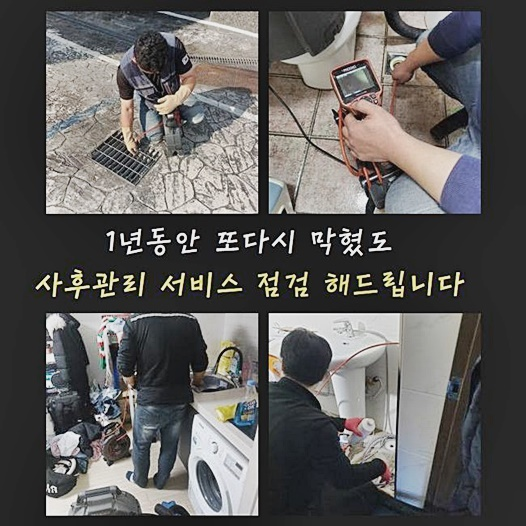
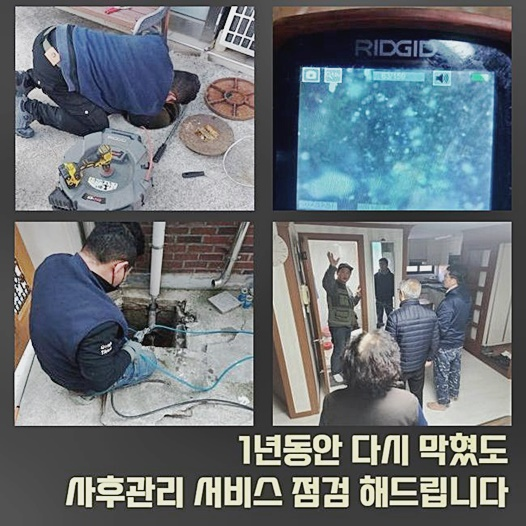
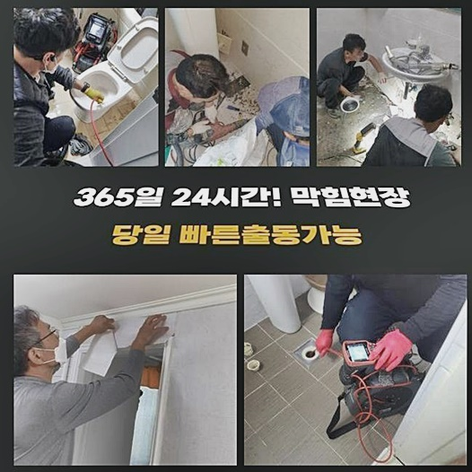
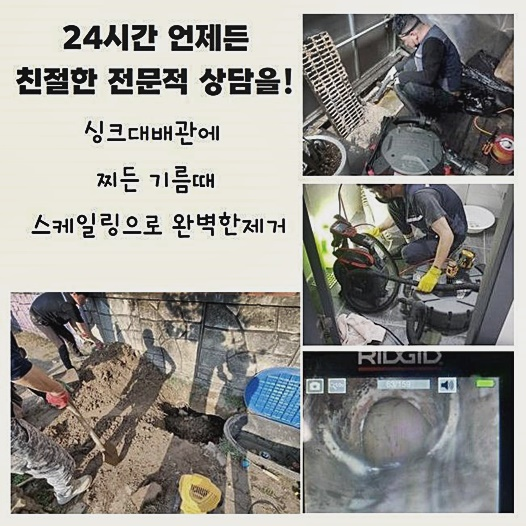
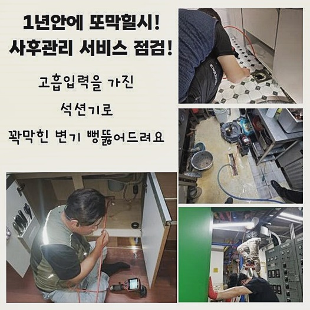
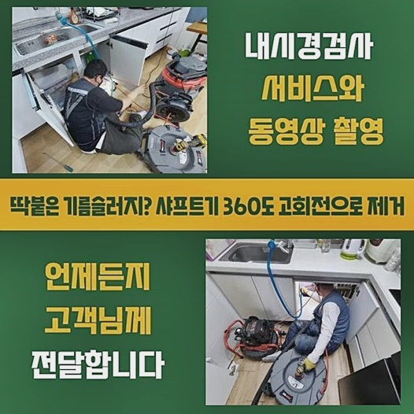

🏠 오전동화장실막힘 부곡동 배관내시경카메라 수리업체
용인시 처인구 배관막힘 전문 시공 후기

📋 작업 개요
- 위치: 용인시 처인구, 수원시 영통구, 화성시 동탄
- 서비스 유형: 배관막힘, 고압세척, 내시경점검
- 작업 일시:
- 업체명: 하수구수사대 (010-5615-2118)
🔍 문제 상황
오전동화장실막힘 부곡동 배관내시경카메라 수리업체
배관이 막혀버리는 까닭은 여러가지예요
물티슈나 플라스틱 조각에 의해 나타나기도 하며 기름슬러지가 배수관 구석쪽에 누증되며 때가 지나버려 굳어지게 되어 사용이 어려운 부분도 꽤 나타나고 있습니다
금번엔 배관트러블이 일어난 지점을 설명드리겠습니다
여긴 설거지 등을 제대로 못하는 문제로 검진을 의뢰해 주셨는데요
이런 일이 발발하였을 때 마트에서 구매가능한 클리너제품이나 끓인 물 혹은 외부적인 충격을 가하여 잔재들을 없애는 계획을 가지신 분이 꽤 많죠
미세한 문제라고 한다면 해소할 가능성도 있지만 다면적인 까닭으로 막혀버리는 일이 생겼다면 자체적으로 고쳐내기는 난망합니다
해당되는 처소는 싱크대 밑부분에서 유독 오수가 빈삭하게 흘러나오고 파이프쪽에서도 통수가 되지 않아서 물넘침이 나타나는 광경이 나타났답니다
싱크볼에는 여과기기가 세팅되어 있어서 설거지 과정에서 방출되는 잔재를 일차로 분리하고 잔여물이 하수구로 방출되도록 조치하신 것을 볼 수 있었어요
다만 조그마한 유분찌꺼기나 침전물은 걸러지지 않고 하수관에 들어가게 됩니다
이로 인하여 불순물이 조금씩 관로에 적체된다면 배관 내부에서 오수가 빠져나갈 수 있는 영역이 지속적으로 비좁아지게 되며 배관 정체 현상이 발발한답니다
세부적인 내용을 알아보기 위하여 배관내시경을 내부로 밀어넣고 본질적인 문제점을 조사하기로 결정했어요
주방시설의 하수관은 아랫부분에 자리잡은 장의 밑부분으로 연결된 상태였답니다

🔎 원인 분석
💡 전문가 진단: 정밀 진단 장비를 사용하여 슬러지의 고착 여부를 판명하고 타격/세척 작업을 실시했습니다.
그렇기 때문에 이 지점의 막힘을 수선하기 위하여 그쪽을 들어내서 진단해야 해요
해당 처소처럼 관로로 연결된 바닥부위에 찰핍하기 수월하다면 별도의 절제 작업은 생략가능합니다
반면 관로가 복잡하게 구성되어 평상적인 해결이 어려운 모양으로 이뤄진 주방공간은 타공이 요망되기도 합니다
구조물을 일부 절단하는 작업은 고객님 댁에 방문하여 관련된 모습을 관측한 후에 시행되며 이러한 것들은 공사 전 고객님에게 고지를 해드린 다음에 수행합니다
내시경설비를 활용하여서 들여다 본 관로의 안쪽에는 많은 양의 이물이 누적되어 있었어요
기름때와 슬러지가 결합하여 주방에서 발생한 탁수가 배출되지 못한 거였죠
기름과 물은 혼합되지 않기에 파이프에 유분이 흘러들면 거리낌없이 사라지는 것이 아닌 배수관의 사이사이에 누적되기 쉬운데요
그리고 기타 침전물이 섞여버리게 되면 배수관 벽에 강력히 점착되기 쉬워서 제거가 더더욱 어려워지죠
과거 경험을 생각해본다면 이러한 정체 상황을 극복해내기 위해서 더운 물을 가득 채워 뚫어보려 시도해보셨을 거예요
그렇지만 끓인 물성분은 외려 하수관에 좋지 않은 파장을 전이할 수가 있습니다
일반적으로 주택 내부에 설비되는 관은 대다수가 혼성중합체로 만들어졌는데 이건 고온에 저항이 높지 않아요
그렇기 때문에 온수를 투입해버리면 배수관이 무르게 되어서 단절되거나 크랙이 발생하기도 해요
따라서 더운물이 아니라 구조적인 변화를 꾀하여 조속히 찌꺼기를 처리하는 것이 배수관 정체현상을 풀어내는 열쇠라고 말씀드릴 수 있어요

🔧 작업 과정
해당 사안을 안전하게 파훼할 수 있는 기기가 샤프트예요
해당 장비는 내측에 머물던 이물을 파쇄하는 제품이고 기다란 호스에 노커가 결합한 형태로 구성되어있고 사용자가 전원을 키고 기기를 작동시키면 머리부분이 하수관의 이물들을 떼어줍니다
부품에는 특별하게 문제를 일으키지는 않는 도구이나 어떠한 작업자가 다루는지에 의하여 종종 트러블이 나타나기도 해요
그렇기 때문에 저희측에서도 긴장감을 풀지 않고 신뢰성있게 시공을 담당합니다
수년간 누적된 슬러지들은 단 몇 분만의 분쇄만으로 없애기엔 역경이 큽니다
그러므로 반복적인 시공에 의존해서 진행하여야 해요
역류상황과 막힘을 동시에 유도하던 찌꺼기들을 샤프트기기를 동원해 수차례 소제하면 점진적으로 완결성 있는 상태로 변모해요
다음에 배관촬영설비를 집어 넣어 잔류하는 침전물을 검점하곤 합니다
더러운 이물들이 가득하였던 파이프가 개운하게 치워진 모양을 확인하실 수가 있죠
조금의 찌꺼기라도 관에 잔류한다면 시간이 지나면서 또다시 물막힘이 생기는데요
식기 세척 과정에서 발생하는 이물들과 믹스되면서 뭉치게 되고 이 때문에 물빠짐을 차단하는 겁니다
그러므로 처음 소제할 때 소량의 이물들이라도 잔존하지 않게끔 살뜰하게 수선에 임하여야 해요
반복하여 세정을 이어가나가다 보면 결국 관로가 뚫리게 되는데요
물막힘과 역류 등을 유발하던 침전물이 깨끗이 소쇄된 것을 확인할 수 있었으며 촬영된 모습을 손님분께도 보여드렸습니다
고객님도 기기의 화면을 꼼꼼하게 검수하셨으며 해당 공사의 처음부터 끝을 직관할 수가 있었습니다
우리팀은 전체적인 구성을 신용있게 말씀해 드리기에 마음 편안한 방문이 계속되는 것이라 생각합니다
해당현장의 이 문제를 완료한 뒤엔 실질적 테스트를 속행하고 있어요
수리 성과를 검증하려면 배수관 초입을 커버 등으로 차단하고 물을 가득 모아서 일거에 부으면 성공 연부를 검증할 수가 있죠
오수가 소멸되지 않고 그 상황이 심화되었었는데 플렉스샤프트를 통해서 무난하게 끝마치게 되었어요
신뢰감있는 공사를 원하신다면 올바르게 손볼수 있는 전문인의 내방이 필수예요


✅ 작업 완료
높은 수준의 테크닉을 근간으로 신망이 두터운 배관통수 담당자의 보조를 통하여 살뜰하게 처리할 수 있죠
모든 조치를 완료하고 살균작업까지 실시하고 하수관 시공 현장을 마감하였죠
시공과정에서 주위에 슬러지가 날아갈 수도 있으며 유해성분이 잔류할 수 있어서 관련된 클리닝은 빼먹지 않고 공사 뒤 진행합니다
이번 배관통수 현장처럼 가정 안에서 처리가 용이한 곳이면 관계없지만 찌꺼기가 모든 파이프에 고착화되어 있다면 물청소 업무가 추가될 수 있답니다
구체적인 견적에 대해선 수선한 다음 검진을 통해서 진솔하게 알려드리고 있으니 방문 방문을 예약해보시길 바랄게요
하수도 뚫음과 관련된 문의내용에 대해선 아무때라도 망설이지 말고 전화부탁드려요



⚠️ 하수구 배관 막힘 예방 및 관리 가이드
- ✅ 머리카락, 비닐, 물티슈 등 물에 분해되지 않는 이물질은 절대 흘려보내지 마세요.
- ✅ 기름기 많은 식기는 설거지 전 키친타올로 먼저 기름때를 닦아내세요.
- ✅ 주기적으로 배수구에 뜨거운 물을 가득 부어주어 유지방 고착을 방지하세요.
- ✅ 작업 후 1년 이내 재발 시 무상 A/S 보증 서비스를 제공합니다.
💡 핵심 정리
- 확실한 장비 작업(내시경 점검 및 샤프트 스케일링)으로 원인을 뿌리 뽑습니다.
- 작업 후 1년 이내에 동일한 부위 재발 시 100% 무상 A/S 서비스를 보장합니다.
- 서울 · 경기 · 인천 전 지역에 24시간 언제든 긴급 출동할 수 있도록 항시 대기 중입니다.
❓ 자주 묻는 질문 (FAQ)
🚨 용인시 처인구 배관막힘 문제로 고민이신가요?
정확한 원인 진단과 확실한 시공으로 재발 없는 해결을 약속드립니다.
24시간 긴급 출동 | 서울 · 경기 · 인천 전지역 | 1년 내 재발 시 무상 A/S